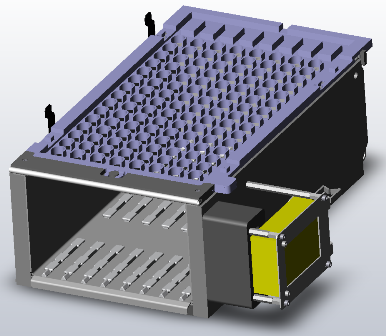
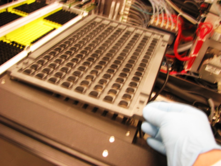
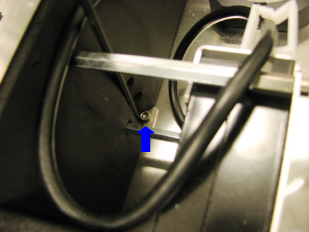
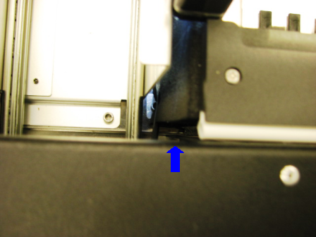
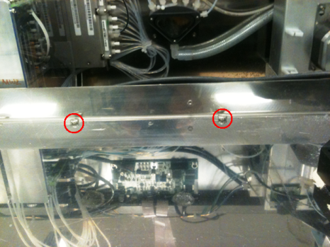
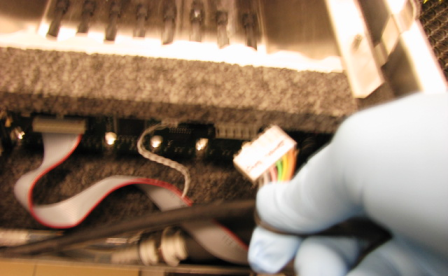
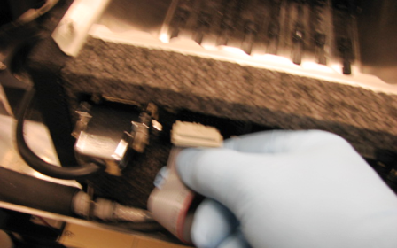
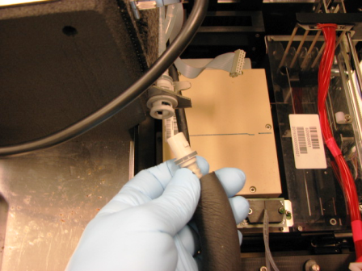
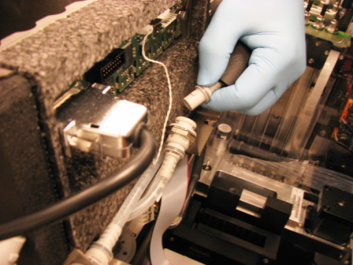
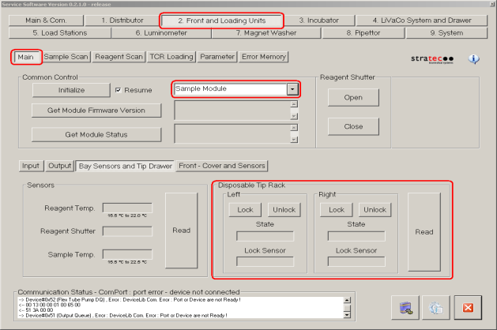

|
|
Laser Warning—This product utilizes internal barcode scanners with visible red laser light. Long term viewing of the laser light could result in eye damage. Never stare into the barcode scanner laser light. This is a Class 2 laser product in accordance to EN 60825-1: 2007 and complies with 21 CFR 1040.10 and 1040.11 except for deviations pursuant to Laser Notice N. 50, dated June 2007. |
Parts and Materials Required
- Slotted screwdriver
- Hex driver, 2.5 mm
- Hex driver, 3 mm
- Hex driver with long shank, 4 mm
- Nut driver, 7 mm
- Scratch awl or similar tool
 SAMPLE BAY, MODULE
SAMPLE BAY, MODULE

Time Required
- 30 minutes (does not include re-teaching the pipettor)
Removal Procedure
- Power down the Panther System.

Wear clean nitrile gloves while performing the following procedures. - Raise the pipettor flaps.
- Remove the gantry shield.
- Be sure the Reagent Pipettor is moved to a position where it will not be damaged or lifted up.
- Remove the top cover by pushing it toward the back of the system and lifting it off the module.

- Remove the partition wall by sliding it up.
- Remove the front cover.
- Using a 4 mm, long shank hex head driver, remove the two screws that secure the module to the datum plate. These screws are covered by the black foam rubber insulation that covers the module and will need to be moved aside to access the screws. One screw is located on the right side of the module, close to the center, behind the rear barcode scanner standoff. The other screw is located on the left side of the module, close to the front left corner.


 Note—The shoulder screws do not need to be loosened or removed upon removing the module.
Note—The shoulder screws do not need to be loosened or removed upon removing the module.
- Disconnect the CAN/Power connector by squeezing the tab and pulling it from the printed circuit board.

- Remove the Tip Tray ribbon cable by gently pulling it from the circuit board.

- Remove the liquid cooling lines by first pressing in and rotating counter-clockwise, then gently pulling to remove from the connector. The lines will automatically shut off so no special precautions need to be taken against fluid spills. A towel could be handy to wipe up the few drips that may be present at the connectors.


- Lift the module, remove it from the system, and place it on the prepared work surface.
Note—If the module will be returned, clean the module.
Replacement Procedure
- Install the Sample Bay into the system so that the rear mounting brackets are under the slotted mounting screws.
- Align the barbs on the male connector to the slots on the female connector, press, and turn clockwise to connect.
- Attach the CAN/Power connector.
- Attach the Tip Tray solenoid ribbon cable.
- Using a 4 mm hex wrench, install the two 5 mm socket head cap screws on the right and front left of the module. The locations for the screws are covered by the black foam rubber insulation that will need to be displaced to insert the screws.
- Tighten the two socket head cap screws and the two slot head screws.
- Check to be sure all wires and hoses are placed so that they will not interfere with the operation of the Pipettors or Distributor.
- Re-install the partition wall.
- Re-install the gantry cover.
- Replace the front cover.
- Replace the Sample Bay lid. Make sure it is snapped forward into the proper position.
- Install the Panther System firmware to the module.
Alignment/Calibration
Verification
- Start up Service Software.
- Using Service Software, verify that the Sample Bay temperature is within acceptable range.
- Scan racks with tubes of all eight lanes.
- Verify the detection of rack presence.
- Using Service Software, initialize the sample module and verify the Tip Drawers Sensors. Check the sensors are properly wired and work correctly. Use the Read button to verify the State of the drawer is correct by opening and closing the drawers individually.

- Verify Tip Drawers lock and unlock. With the left drawer in, lock the drawer. Verify the Lock Sensor reads locked using the Read button. Unlock the drawer and verify the Lock Sensor reads unlocked using the Read button. Do the same with the right drawer.
 button at the top of the page to send feedback, comments, or change requests.
button at the top of the page to send feedback, comments, or change requests.